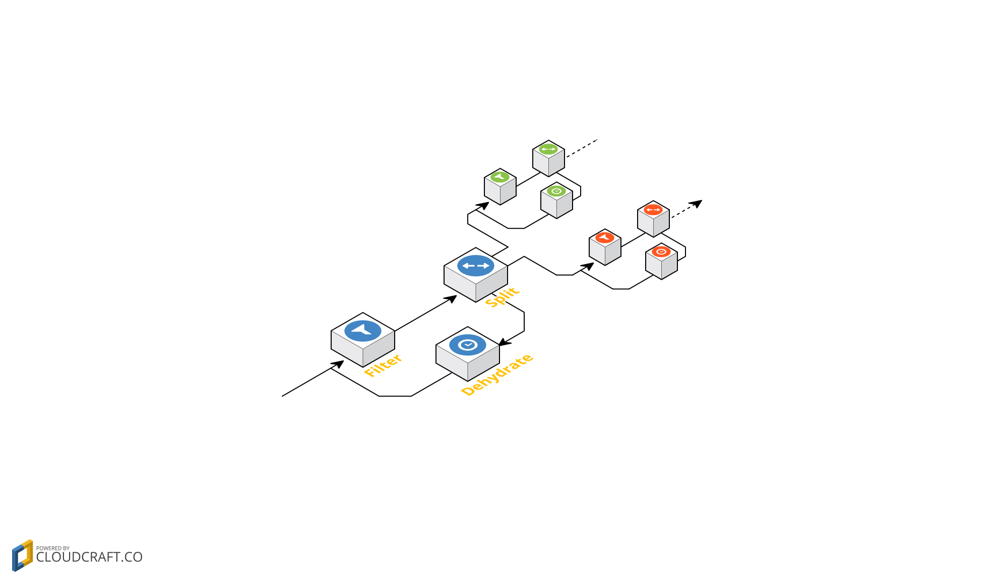

ReDe /'redɪ/ n. a Redis Module for simple data dehydration. This is a pretty straightforward implementation of the dehydration system depicted in the article "Fast Data". The Goal of this module is to solve the Contextual Completeness and Emergent Relevancy problems by adding the ability to postpone incoming elements to a later time in which we will have a complete information for these elements. Effectively acting as a snooze button to any element.

From the article:
Dehydrators are simplistic time machines. They transport data elements that arrived prematurely in terms of their context right to the future where they might be needed, without loading the system while waiting. This concept is achieved by attaching a time-indexed data store to a clock, storing elements as they arrive to the dehydrator and re-introducing them as inputs to the system once a predetermined time period has passed.
Using this system it is also possible to craft a self cleaning "claims check", to minimize load on transportation and manipulation nodes of a pipeline architecture.
You can read further on the algorithm behind this module here.
The module works by adding a new type to Redis -DehydratorType. It will be ceated automatically when you call a push command on it, and it can be deleted using the DEL command like any other key.

Common Use Cases
- Stream Coordination - Make data from one stream wait for the corresponding data from another (preferebly using sliding-window style timing).
- Event Rate Limitation - Delay any event beyond current max throughput to the next available time slot, while preserving order.
- Self Cleaning Claims-Check - Store data for a well known period, without the need to search for it when it is expired or clear it from the data-store yourself.
- Task Timer - Assign actions and their respective payloads to a specific point in time.
Usage
The dehydrator is an effective 'snooze button' for events, you push an event into it along with an id (for future referance) and in how many seconds you want it back, and poll whenever you want the elements back. only expired elements would pop out.
It includes 6 main commands:
-
REDE.PUSH- Push an element, it will need an id, the element itself and dehydration time in seconds. -
REDE.PULL- Pull the element with the appropriate id before it expires. -
REDE.POLL- Pull and return all the expired elements. -
REDE.LOOK- Search the dehydrator for an element with the given id and if found return it's payload (without pulling). -
REDE.UPDATE- Set the element represented by a given id, the current element will be returned, and the new element will inherit the current expiration. -
REDE.TTN- Return the minimal time between now and the first expiration
The module also includes a test command:
-
REDE.TEST- a set of unit tests of the above commands. NOTE! This command is running in fixed time (~15 seconds) as it usessleep(dios mio, No! ✞✞✞).
see more about the commands in Commands.md
Quick Start Guide
Here's what you need to do to build this module:
- Build Redis in a build supporting modules.
- Build the module:
make - Run Redis loading the module:
/path/to/redis-server --loadmodule ./example/module.so
Now run redis-cli and try the commands:
127.0.0.1:9979> REDE.PUSH some_dehy id1 world 15
OK
127.0.0.1:9979> REDE.PUSH some_dehy id2 hello 1
OK
127.0.0.1:9979> REDE.PUSH some_dehy id3 goodbye 2
OK
127.0.0.1:9979> REDE.PULL some_dehy id3
"goodbye"
127.0.0.1:9979> REDE.POLL some_dehy
1) "hello"
127.0.0.1:9979> REDE.POLL some_dehy
(empty list or set)
127.0.0.1:6379> REDE.LOOK some_dehy id2
(nil)
127.0.0.1:6379> REDE.LOOK some_dehy id1
"world"
127.0.0.1:6379> REDE.PULL some_dehy id2
(nil)
127.0.0.1:6379> REDE.TTN some_dehy
8
This (empty list or set) reply from REDE.POLL means that the there are no more items to pull right now, so we'll have to wait until enough time passes for our next element to expire. using REDE.TTN we can see this will be in 8 seconds (in this example we waited a bit between commands). Once 8 seconds will pass we can run:
127.0.0.1:9979> REDE.POLL some_dehy
1) "world"
127.0.0.1:9979> REDE.TEST
PASS
(15.00s)
127.0.0.1:9979> DEL some_dehy
OK
Enjoy!
About This Module
ReDe is based off a python version of the same concepts designed by Adam Lev-Libfeld and developed in Tamar Labs by Adam Lev-Libfeld and Alexander Margolin in mid 2015.
Rede was created by Adam Lev-Libfeld (@datokenizer) during the RedisModulesHackathon in late 2016, and is maintained by him solely.